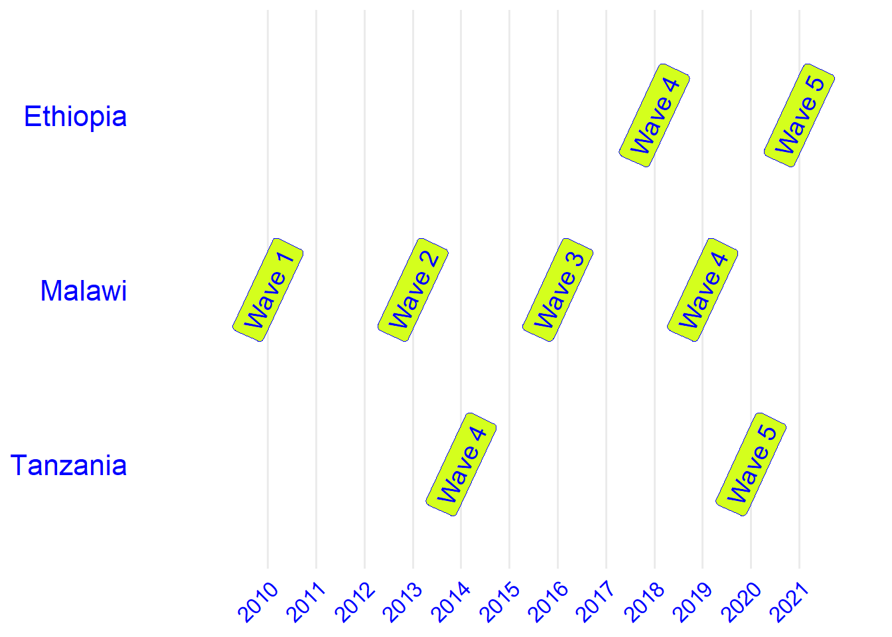

Legume intensification
Data used
Ethiopia
Basic descriptives
There are 522 households in Ethiopian Social Survey (ESS) dataset who have produced maize as a main crop both in ESS4 and ESS5. In 2017, 174 farmers have indicated that they have planted a legume on the maize plot during the past three years, and 84 (48.3%) of them have also used improved maize seeds during the current cropping season. In 2020, the number of farmers adopting crop rotation has increased to 201, and also the number of those adopters who used improved maize seeds have increased to 136 (67.7%).
The data reveals significant changes in adoption rates between 2017 and 2020. The number of farmers practicing maize-legume rotations and using improved seeds increased substantially over this period. Overall, adoption of improved seeds has grown considerably, with many more farmers implementing legume rotation on the maize plots.
| wave | improved_maize | norotation | rotation |
|---|---|---|---|
| wave4 | local | 231 | 90 |
| wave4 | improved | 117 | 84 |
| wave5 | local | 188 | 65 |
| wave5 | improved | 133 | 136 |
Malawi
Basic descriptives
In terms of legume rotation, there are obvious differences when comparing Wave 1 and Wave 2 with Wave 3 and Wave 4. This is because of the way the rotation variable was developed in these waves. In wave 1 an 2, we were only able to identify if legume was planted in the dry season following the maize cultivation in the dry season. However, in wave 3 and 4, farmers were asked what crops were planted following the previous rainy season1 as well as what crops will be planted after the next rainy season.
| wave | norotation | rotation |
|---|---|---|
| wave1 | 638 | 16 |
| wave2 | 629 | 25 |
| wave3 | 436 | 218 |
| wave4 | 324 | 330 |
| wave | purestand | mixed |
|---|---|---|
| wave1 | 469 | 185 |
| wave2 | 339 | 315 |
| wave3 | 394 | 260 |
| wave4 | 278 | 376 |
Methods
Ethiopia
In the analysis of Ethiopian maize-producing households from waves 4 and 5 of the Ethiopia Socioeconomic Survey (ESS), we focus exclusively on legume rotations. Maize-legume intercropping is not considered in this part due to its rare occurrence among the sampled households. Our main variable, agroecological intensification, captures maize-legume rotations and improved maize cultivation practices. The variable of interest takes four values:
- 0: No intensification
- 1: Maize-legume rotation
- 2: Improved variety
- 3: Maize-legume rotation with improved maize variety
The table below presents the social and plot-level characteristics considered in the analyses. Plot characteristics reflect the attributes of plots where maize is the primary crop.
| No intensification | Rotation | IV | Rotation and IV | |
|---|---|---|---|---|
| wave4 | 231 | 90 | 117 | 84 |
| wave5 | 188 | 65 | 133 | 136 |
| Outcome variables | Socio-economic characteristics | Plot characteristics |
|---|---|---|
| Household dietary diversity score | Farm size | Soil type |
| Food consuption expenditure | Manager age | Crop count |
| Total consumption expenditure | Market distance | Pesticide use |
| Agricultural asset index | Plot certificate | |
| Size of maize produced plots | Elevation | |
| Manager gender | Organic fertilizer | |
| Manager education (11 missing) | Inorganic fertilizer | |
| Weather shocks | ||
| Household size | ||
| Household dependency ratio | ||
| Number of main maize plots | ||
| Subsistence orientation | ||
| Total non-farm income | ||
| Extension access | ||
| Tropical livestock units owned | ||
| Women’s control over assets (32 m) | ||
| Women’s education | ||
| Credit access |
Malawi
| No intensification | Diversification | IV | Diversification and IV | |
|---|---|---|---|---|
| wave1 | 206 | 80 | 252 | 116 |
| wave2 | 145 | 150 | 182 | 177 |
| wave3 | 133 | 133 | 149 | 239 |
| wave4 | 93 | 238 | 89 | 234 |
Footnotes
That is the dry season before the reference rainy season.↩︎